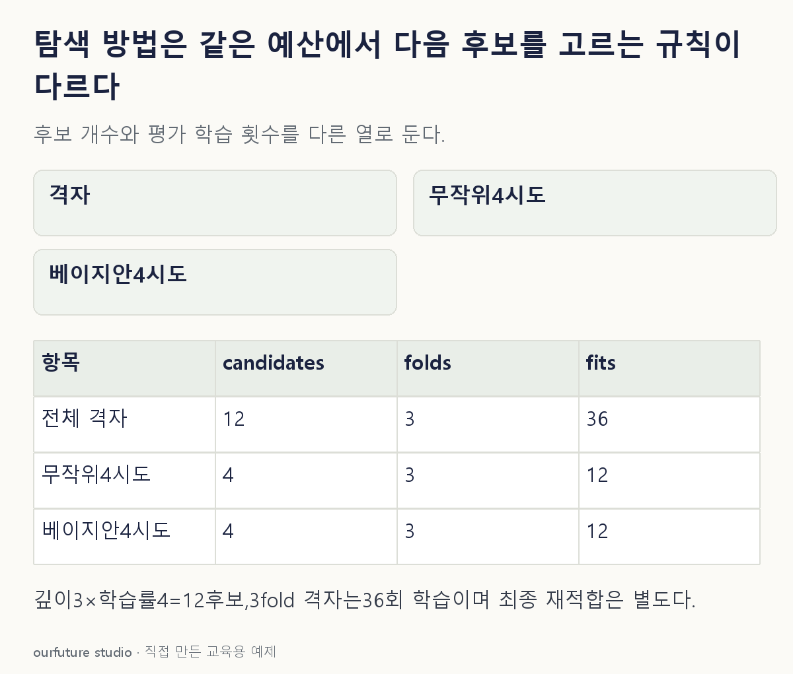

핵심 이론
격자 탐색은 미리 정한 값들의 조합을 평가한다. 깊이3가지와 학습률4가지를 모두 조합하면12후보다. 무작위 탐색은 정한 분포나 후보집합에서 설정을 뽑고, 시도 횟수로 예산을 정할 수 있다. 유한 집합에서 중복 없이 뽑는 경우와 연속분포에서 뽑는 경우는 범위와 동작이 다르므로 실제 설정을 확인한다. 정한 범위 밖의 좋은 값은 어느 방법도 저절로 찾지 못한다.
베이지안 최적화는 지금까지 시도한 설정과 평가값으로 목적함수의 대리모형을 갱신하고 획득함수로 다음 후보를 고르는 대표적인 순차 탐색 방식이다. 높은 점수가 기대되는 곳과 불확실한 곳을 살펴보는 균형을 설계한다. 한 번 낮은 점수가 나온 주변을 영원히 금지하거나 이미 최고인 후보만 계속 반복한다는 뜻이 아니다. 대리모형·획득함수·초기 시도·잡음 가정에 따라 결과가 달라진다.
모든 탐색의 점수는 개발용 검증 절차에서 구한다. 최종 시험 정답을 보며 다음 후보를 고르면 독립 평가가 깨진다. ‘후보12개’와 ‘학습12회’도 같지 않다.3fold 교차검증이면 후보당3번 학습하고 최종 재적합이 추가될 수 있다. 후보마다 학습 시간이 다르면 같은 시도 횟수도 같은 계산 비용이 아니다. 예산과 비교 기준을 기록해야 탐색 방법의 차이를 공정하게 해석할 수 있다.
작은 예제로 확인하기
기존 ML15의 이전 관측을 다음 탐색에 반영하는 구분을 연결한다. 자체 설정 공간은 깊이3가지×학습률4가지이며 각 후보를 같은3fold로 평가한다.
| 절차 | 후보 결정의 기준 | 예제의 평가 학습 수 |
|---|---|---|
| 전체 격자 | 미리 정한12조합 | 12×3=36 |
| 무작위4시도 | 지정 분포·집합의 추출 | 4×3=12 |
| 베이지안4시도 | 이전 결과와 대리모형 | 4×3=12 |
평가 학습 수는 최종 전체자료 재적합을 제외한 계산이다. 표의4시도 둘은 실행 원리가 다르다는 뜻이며 어느 쪽의 점수가 더 높았다는 실험 결과가 아니다. 계산 시간이 큰 실제 모형에서는 총 시간도 비교해야 한다.
그림으로 확인하기

직접 고르기
검증 점수로 설정을 평가한다. 이전 후보·점수와 불확실성을 표현한 대리모형을 갱신해 다음 후보를 고르려 한다.
이 방식과 가장 직접 연결되는 것은?
- 1. 고정된 전체 격자만 순서대로 평가
- 2. 이전 점수와 무관한 무작위 추출만 수행
- 3. 시험 정답으로 후보를 선택
- 4. 베이지안 최적화
정답과 오답의 이유 확인하기
정답 4번 — 베이지안 최적화
베이지안 최적화는 관측한 결과로 대리모형을 갱신하고 획득함수를 이용해 다음 평가 위치를 정한다. 설정과 예산 안의 순차 의사결정이며 전역 최적의 보장은 아니다.
- 1번: 고정 격자의 조합은 이전 검증 결과를 이용해 새 평가 위치를 정하는 방식이 아니다.
- 2번: 이 문제는 이전 점수와 불확실성을 다음 결정에 반영한다고 명시했다.
- 3번: 최종 시험 정답을 탐색에 쓰면 독립 성능 평가를 위한 역할이 무너진다.
조건 하나 바꾸어 풀기
깊이 3가지·학습률 4가지의 전체 격자를 3fold로 평가한다. 최종 재적합을 제외하면 학습은 몇 회인가?
풀이: 12후보×3fold=36회다.
후보 개수와 후보당 반복 학습 횟수를 구분한다. 최종 최적 설정을 전체 개발자료에 다시 적합하면 그 비용은 별도다.
다시 떠올릴 단서
다음 후보를 고를 때 이전 점수를 쓰는가.
근거와 적용 조건
- scikit-learn Tuning hyper-parameters — 3.2.1 격자와 3.2.2 무작위 탐색. 확인일 2026-10-30.
- Snoek et al. Practical Bayesian Optimization — 2절 Gaussian process priors와 2.2 acquisition functions. 확인일 2026-10-30.
상황·수치·보기·조건 변경은 자체 교육 예제다. 민간 복원 문항의 공식 정답이나 실제 성능·학습 효과를 뜻하지 않는다.
읽은 내용을 적용해 보기
후보를 실제 샘플링·학습·최적화하지 않는 횟수 계산이다. 무작위·베이지안은 중복 허용 가능성을 포함한 시도 예산으로 해석하며 같은 시간 비용을 보장하지 않는다.